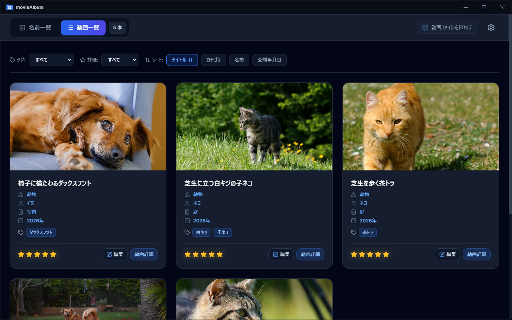

MovieAlbumについて
MovieAlbumは動画を効率的に整理・閲覧するためのWindows用アプリです。
動画管理アプリはすでにいくつかありますが、動画自体にタグ付けするものがほとんどです。
これでは、たとえば映画のコレクションを主演俳優別に整理したいとき、俳優の情報と映画の情報を分けることができません。
そこでMovieAlbumでは、動画一覧リストに加え、ユーザーが選択した項目でもリストを生成するようにしました。
- カテゴリ、登場人物、評価、タグなどで使って動画を分類できます。
- メインの動画一覧に加え、ユーザーが選択した項目によるカスタム一覧を作成できます。
- お気に入りのシーンをサムネイル画像として保存できます（動画形式により一部制限があります）。
- 動画をグループ化して管理することも可能です。
MovieAlbumであなたの動画鑑賞をより快適に。


対応ファイル形式
- mp4
- m4v
- webm
- ogv
- ogg
- avi*
- wmv*
- など
* 一部制限あり
アップデート履歴
- version 1.0.3
-
- ウィンドウ拡大時のレイアウトを調整しました。
- version 1.0.2
-
- 検索機能を追加しました。
- wmv動画などのサムネイル画像作成機能を改善しました。
- version 1.0.1
-
- 設定ファイルの切り替えに対応しました。
- パフォーマンス改善。
- version 1.0.0
-
- 初回リリース。
プライバシーポリシー
- このアプリは、個人情報、またはデバイス情報などの個人を特定できる情報を収集、保存、送信しません。
- 外部サーバーや第三者との情報の共有は一切行いません。